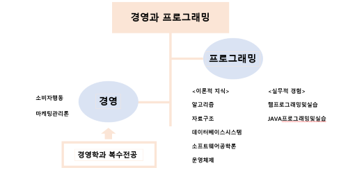

[붙임] 여기엔 파일 없지롱~
▶ 자기설계전공이란?

자기설계전공은 학생이 주도적으로 설계하는 고유의 전공을 뜻해!
자율전공학부(4년) 트랙은 흔히들 알고 있는 자율전공학부(1년)과는 달라.
1년간 여러 수업들을 들으며 추후 희망하는 과로 전과하는 1년트랙과는 달리
4년트랙은 대학 생활 4년 동안 각자 진로에 맞게 스스로 커리큘럼을 생성해.
정말 멋지지? 목표가 확실하면 자율전공학부는 너희에게 날개를 달아줄거야.
옆에 보이는 이 그림은 너희 선배들 중 한 명의 자기설계전공의 도표야.
뭔가 너무 어렵지? 걱정하지마. 너희를 위해서 앞으로 설명해 줄거니까!
이것만 기억해! 자기설계전공은 너희 각자 고유의 커리큘럼이라는 것을.
자자 우리 모두 빠이팅 해보자고!
자율전공학부(4년) 트랙은 흔히들 알고 있는 자율전공학부(1년)과는 달라.
1년간 여러 수업들을 들으며 추후 희망하는 과로 전과하는 1년트랙과는 달리
4년트랙은 대학 생활 4년 동안 각자 진로에 맞게 스스로 커리큘럼을 생성해.
정말 멋지지? 목표가 확실하면 자율전공학부는 너희에게 날개를 달아줄거야.
옆에 보이는 이 그림은 너희 선배들 중 한 명의 자기설계전공의 도표야.
뭔가 너무 어렵지? 걱정하지마. 너희를 위해서 앞으로 설명해 줄거니까!
이것만 기억해! 자기설계전공은 너희 각자 고유의 커리큘럼이라는 것을.
자자 우리 모두 빠이팅 해보자고!